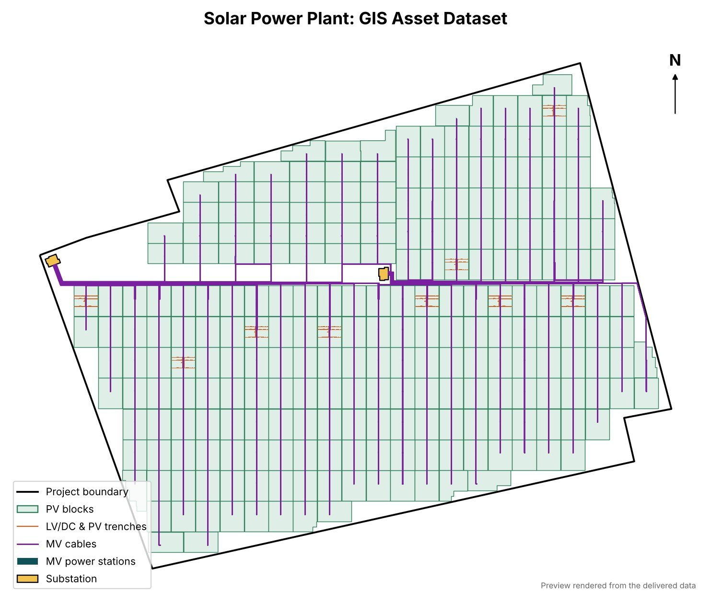

GIS Data Engineering & CADFig. 1 Project boundary, PV blocks, trenches, MV cables, power stations and substation (preview rendered from the delivered shapefiles)
Solar Power Plant GIS Dataset
Built the GIS dataset for a solar power plant from engineering drawings, in three approved milestones.
- Location
- Solar power plant site
- Year
- 2026
- Client
- Engineering firm (5.0★, $1,000)
- Tools
- ArcGIS Pro, AutoCAD, Shapefile


Map preview rendered from the delivered shapefiles.
Challenge
An engineering firm needed a complete GIS asset dataset for a solar power plant, built from engineering drawings and approved milestone by milestone.
Approach
- Milestone 1 (approved): project boundary, block boundaries with IDs, substation and MV power station components (UPS, inverter, transformer, RMU)
- Pile points (about 8.5 MB of points) and LV/DC and PV trench layers, by trench width and depth
- Milestone 2 (approved): MV cable layer
- Milestone 3 (approved): all comments closed
Results
- Full set of attributed shapefiles delivered across three approved milestones ($1,000 contract)
- Client review: “He did very well Job delivered his project on time.”